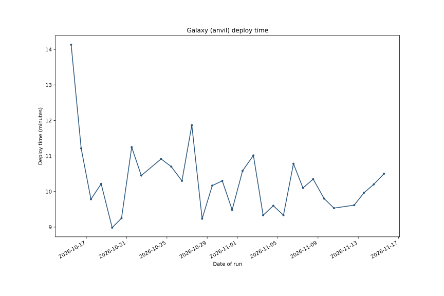

| Date | Status | Duration | Run |
|---|---|---|---|
| Mon Nov 23 16:48:26 2026 | success | 10.4 min | run |
| Sun Nov 22 13:52:03 2026 | success | 9.8 min | run |
| Sat Nov 21 13:57:22 2026 | success | 9.9 min | run |
| Fri Nov 20 14:38:16 2026 | success | 10.2 min | run |
| Thu Nov 19 14:57:41 2026 | success | 10.2 min | run |
| Wed Nov 18 14:48:59 2026 | success | 9.7 min | run |
| Tue Nov 17 15:08:25 2026 | success | 10.0 min | run |
| Mon Nov 16 14:17:15 2026 | success | 12.4 min | run |
| Sun Nov 15 13:11:14 2026 | success | 10.5 min | run |
| Sat Nov 14 12:43:30 2026 | success | 10.2 min | run |
| Fri Nov 13 13:38:59 2026 | success | 10.0 min | run |
| Thu Nov 12 14:14:29 2026 | success | 9.6 min | run |
| Tue Nov 10 14:01:34 2026 | success | 9.5 min | run |
| Mon Nov 09 14:39:43 2026 | success | 9.8 min | run |
| Sun Nov 08 12:28:14 2026 | success | 10.3 min | run |
| Sat Nov 07 12:10:19 2026 | success | 10.1 min | run |
| Fri Nov 06 13:30:13 2026 | success | 10.8 min | run |
| Thu Nov 05 13:43:52 2026 | success | 9.3 min | run |
| Wed Nov 04 13:31:22 2026 | success | 9.6 min | run |
| Tue Nov 03 13:14:10 2026 | success | 9.3 min | run |
| Mon Nov 02 14:05:35 2026 | success | 11.0 min | run |
| Sun Nov 01 12:15:54 2026 | success | 10.6 min | run |
| Sat Oct 31 11:25:58 2026 | success | 9.5 min | run |
| Fri Oct 30 11:55:00 2026 | success | 10.3 min | run |
| Thu Oct 29 12:02:30 2026 | success | 10.2 min | run |
| Wed Oct 28 11:53:08 2026 | success | 9.2 min | run |
| Tue Oct 27 11:18:54 2026 | success | 11.9 min | run |
| Mon Oct 26 11:47:50 2026 | success | 10.3 min | run |
| Sun Oct 25 10:24:26 2026 | success | 10.7 min | run |
| Sat Oct 24 10:02:50 2026 | success | 10.9 min | run |